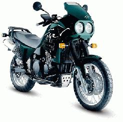
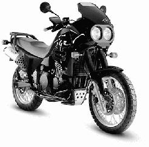
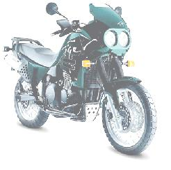
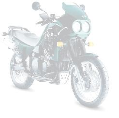
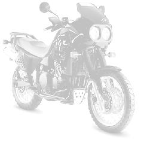
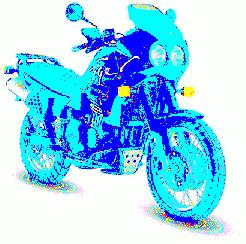

以下のセクションはパレット イメージにのみ適応します。 これは trueカラーのイメージでは作動しないということです。
背景イメージが少し“色あせて”見えるようにしてグラフから注意をそらさないようにすることが、多くの場合は望ましいです。 これを行うには 2 通りの方法があります。
背景イメージの呼び出しを調整するため、明るさとコントラストの両方が範囲 [-1、1] での実際の数字です。たとえば、背景イメージだけ、または全体のイメージを調整するのに選ぶことができます。 背景イメージ変更するには、適した値を指定するためメソッド Graph::AdjBackgroundImage() を使用してください。 このメソッドで何ができるかいくつかの例を見てみましょう。 以下の例は、“utils/” ディレクトリにある小さいユーティリティ “adjimg.php” で生成されています。

Brightness=0, contrast=0, saturation = -1 (オリジナル イメージ)

Brightness=0, contrast=0, saturation = -1 (黒と白のイメージ)

Brightness=0.3, contrast=-0.3, saturation=0

Brightness=0.4, contrast=-0.7, saturation=0

Brightness=0.4, contrast=-0.7, saturation=-1

Brightness=0, contrast=0, saturation=1